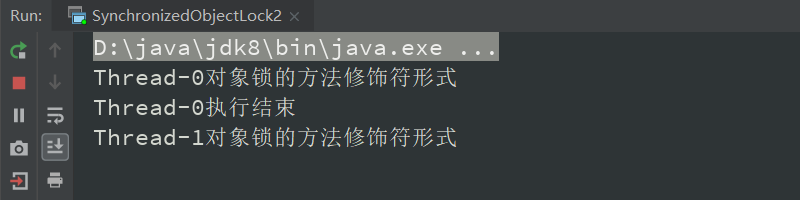

1.简介
①作用
- Oracle 的官方解释：synchronized 关键字的同步方法支持一种简单的策略来防止线程干扰和内存一致性错误。
- 如果一个对象对多个线程可见，则对该对象变量的所有读取或写入都是通过同步方法完成的。
- 一句话总结 synchronized 的作用：能够保证在同一时刻最多只有一个线程执行该段代码，以达到保证并发安全的效果。
- 被 synchronized 关键字修饰的代码会以原子的方式执行，即多个线程不会同时执行这段代码，同一时刻最多只有一个线程执行该段代码。
- 如何控制同一时刻只有一个线程执行该段代码？有一把锁，当第一个线程执行这段代码时拿到这把锁，直到方法执行结束或一定条件后才会释放这把锁。在这把锁释放前，其他线程想要执行这段代码，只能等待或者阻塞。直到锁释放后，其他线程才能执行这段代码。
②地位
- synchronized 是 Java 的关键字，被 Java 语言原生支持。
- volatile 也是 Java 的关键字（它们都是 Java 并发编程中的重要关键字）
- 它是最基本的互斥同步手段
- 互斥：是指某一资源同时只允许一个访问者对其进行访问，具有唯一性和排它性。但互斥无法限制访问者对资源的访问顺序，即访问是无序的。
- 同步：指程序用于控制不同线程之间操作发生相对顺序的机制。
- 它是并发编程中的元老级角色，是并发编程的必学内容。
③不使用并发（同步方法）的后果
- 代码实战：两个线程同时执行
a++，最后结果会被预计的少。
1 | /** |
- 连续运行三次程序，打印的结果各不相同。
- 原因：
a++看上去只是一个操作，实际上包含了三个步骤：- ①读取 a
- ②将 a 的值加 1
- ③将 a 的值写入到内存中
- 而在多线程的情况下任何一步执行完成后都有可能被打断，都有可能轮到另一个线程去执行，即线程不安全。
④使用并发（同步方法）
1 | /** |
- 重复运行多次程序，打印结果都是
a = 200000。
2.用法
synchronized 关键字也叫做同步修饰符
音标：[ˈsɪŋkrənaɪzd]
①对象锁
- 对象锁的两种形式：
- 同步代码块锁
- 手动指定锁对象（this 或自定义对象）
- 方法锁
- synchronized 修饰普通方法（不能修饰静态方法），锁对象默认为 this。
1 | /** |
- 以上代码线程 0 先执行，执行完成后线程 1 再执行。

1 | /** |
- 以上代码线程 0 拿到第 2 把锁的同时，线程 1 拿到第 1 把锁，并行执行（第一把锁和第二把锁不相同，互不影响）。
1 | /** |
- 以上代码线程 0 先执行，执行完成后线程 1 再执行。


②类锁
- Java 类可能有很多个对象，但是只有 1 个 Class 对象。
- 本质：所谓的类锁，就是 Class 对象的锁。
- 效果：类锁在同一时刻只能被一个对象拥有
- 类锁的两种形式：
- 静态锁
- synchronized 加在 static 方法上
- Class 对象
- synchronized 代码块（锁对象默认为 Class 对象）
- 指定锁为 Class 对象
1 | /** |
- 以上代码线程 0 先执行，执行完成后线程 1 再执行。
- 若是将
method()方法变为非静态方法，此时就算加了 synchronized 关键字，线程 0 和线程 1 也会同时执行。
1 | /** |

- 因为静态方法属于整个类，当多个线程（类的不同实例）访问这个类的静态方法时，实际访问的是同一个方法。所以给这个静态方法上锁之后，同一时刻只能由一个线程执行该方法。
- 而非静态方法属于调用它的实例对象，当两个线程分别调用其实例对象的非静态方法时，相当于各自执行自己的方法，这时加或不加锁都不影响各自方法的执行。
- 所以类锁适用于在全局情况下同步方法，而不仅仅在对象层面。
1 | /** |
- 以上代码线程 0 先执行，执行完成后线程 1 再执行。

- 若是将 synchronized 代码块中的
SynchronizedClassLock2.class改为this，此时就算是加了 synchronized 关键字，线程 0 和线程 1 也会同时执行。
1 | /** |
- 原因：不同实例的锁对象不同，多个线程并行执行。
3.多线程访问同步方法的 7 种情况（面试常考）
同步方法：被 synchronized 关键字所修饰的方法
非同步方法：没有被 synchronized 关键字所修饰的方法
普通方法：指非静态方法
①两个线程同时访问一个对象的同步方法
- 原因：两个线程属于同一个实例，所以两个线程访问的是同一个方法，而这个方法被 synchronized 关键字修饰后默认以 this 对象作为同步方法的锁，所以它们会争抢同一把锁。
- 结果：两个线程争抢同一把锁，同一时刻只能有一个线程执行该同步方法。
1 | /** |

②两个线程访问的是两个对象的同步方法
- 原因：两个线程属于不同的实例，所以两个线程访问的是不同的方法，而每个方法被 synchronized 关键字修饰后默认以 this 对象作为同步方法的锁，所以它们的锁对象不是同一个。
- 结果：两个线程的锁对象不是同一个，并行执行，互不干扰。
1 | /** |
③两个线程访问的是 synchronized 的静态方法
- 原因：虽然两个线程属于类的不同实例，但是两个线程访问的方法是类的静态方法，即它们实际访问的是同一个方法。给这个静态方法上锁之后，同一时刻只能有一个线程执行该方法。
- 结果：两个线程争抢同一把锁，同一时刻只能有一个线程执行该同步方法。
1 | /** |

④同时访问同步方法与非同步方法
- 原因：synchronized 关键字只作用于其指定的方法中，其他非同步方法不受到影响。
- 结果：当线程 0 访问同步方法，线程 1 访问非同步方法时，两个线程并行执行，互不干扰。
1 | /** |
⑤同时访问一个类的不同的普通同步方法
- 原因：两个线程属于同一个实例，虽然两个线程访问的是一个类的不同的普通同步方法，但是被 synchronized 关键字修饰的普通方法默认都是以 this 对象作为同步方法的锁，所以它们会争抢同一把锁（对于同一个实例来讲，两个方法的 this 对象是同一个）。
- 结果：两个线程争抢同一把锁，同一时刻只能有一个线程执行该线程对应的同步方法。
1 | /** |
⑥同时访问静态 synchronized 和非静态 synchronized 方法
- 原因：
- synchronized 关键字修饰静态方法：类锁，锁住的是 .class 对象。
- synchronized 关键字修饰非静态方法：方法锁，锁住的是实例本身 this。
- 两个线程的锁对象不是同一个，所以两个线程可以同时运行。
- 结果：两个线程的锁对象不是同一个，并行执行，互不干扰。
1 | /** |
⑦方法抛出异常后会释放锁
- synchronized：方法抛出异常后会主动释放锁。
- Lock 类：方法抛出异常后不会主动释放锁，必须显式地释放锁。
1 | /** |
⑧总结
- 一把锁只能同时被一个线程获取，没有拿到锁的线程必须等待（对应①、⑤）。
- 每个实例都对应有自己的一把锁，不同的实例之间对应不同的锁，所以不同的实例之间互不影响。
- 例外：锁对象是 .class 以及 synchronized 修饰的是 static 方法的时候，所有对象共用同一把类锁（对应②、③、④、⑥） 。
- 无论是方法正常执行完毕或者方法抛出异常，都会释放锁（对应⑦）。
- 在被 synchronized 修饰的方法中调用没有被 synchronized 修饰的方法时，不是线程安全的，因为没有被 synchronized 修饰的方法是可以被多个线程同时访问的。
4.性质
①可重入性（递归锁）
这是它区别于其他锁的关键特点
可重入性：指的是同一线程的外层函数获得锁之后，内层函数可以直接再次获取该锁。
- ReentrantLock 也是可重入锁
好处：
- 避免死锁（假设方法 1 和方法 2 都被 synchronized 关键字修饰，此时某线程执行方法 1 和方法 2 时都需要同一把锁。假如线程 A 执行了方法 1 并且获得了这把锁，此时方法 1 要想访问方法 2，假设 synchronized 关键字没有可重入性，相当于线程 A 没有方法 2 的锁，不能直接使用本身已经获得的锁。既想要拿到方法 2 的锁又不释放方法 1 的锁
（方法 1 和方法 2 是同一把锁），就开始了永久等待，变成了死锁。） - 提升封装性（避免一次次解锁、加锁，提高了封装性，简化了并发编程的难度。）
- 避免死锁（假设方法 1 和方法 2 都被 synchronized 关键字修饰，此时某线程执行方法 1 和方法 2 时都需要同一把锁。假如线程 A 执行了方法 1 并且获得了这把锁，此时方法 1 要想访问方法 2，假设 synchronized 关键字没有可重入性，相当于线程 A 没有方法 2 的锁，不能直接使用本身已经获得的锁。既想要拿到方法 2 的锁又不释放方法 1 的锁
粒度：即范围，默认加锁的范围是线程而非调用。
- 情况1：访问同一个方法是可重入的
- 情况2：可重入不要求是同一个方法（即证明在一个同步方法中调用另一个同步方法是可行的）
- 情况3：可重入不要求是同一个类中的
- 以上三种情况证明了可重入的粒度不是调用范围的，而是线程范围的。所以在同一个线程中，如果已经拿到了一把锁，又想继续使用这把锁访问其他（类的）方法时，只要锁是同一把锁，就可以访问。
证明情况1：访问同一个方法是可重入的
1 | /** |
- 证明情况2：可重入不要求是同一个方法
1 | /** |
- 证明情况3：可重入不要求是同一个类中的
1 | /** |
②不可中断性
- 这个性质是 synchronized 关键字的劣势
- 不可中断性：一旦这个锁已经被别人获得了，如果我还想获取，我只能选择等待或者阻塞，直到别的线程释放这个锁。如果别人永远不释放锁，那么我只能永远等待下去。
- 而 Lock 类拥有可以中断的能力
- 如果我觉得我等待的时间太长了，有权中断现在已经获取到锁的那个线程的执行。
- 如果我觉得我等待的时间太长了不想再等了，也可以直接退出。
5.原理
①加锁和释放锁的原理
- 每一个类的实例对应着一把锁，而每一个被 synchronized 关键字修饰的方法都必须首先获得调用该方法的类的实例的锁才能执行，否则线程就会阻塞。而方法一旦执行，就会独占这把锁，直到该方法返回或者抛出异常，才会将锁释放。释放之后，其他被阻塞的线程就能获得这把锁，重新进入到可执行的状态。
- 即当一个对象中有 synchronized 关键字修饰的方法或者代码块时，要想执行这段代码，就必须先获得对象锁。如果此对象的对象锁已经被其他调用者占用了，就必须等待它被释放。所有的 Java 对象都含有一个互斥锁，这个锁由 JVM 自动去获取和释放，我们只需要指定这个对象就可以了。
- 获取和释放锁的时机：内置锁
- 每个 Java 对象都可以用作一个实现同步的锁，这个锁被称为内置锁或监视器锁。线程在进入到同步代码块之前，会自动获得这个锁，并且在退出同步代码块的时候，会自动释放。
- 获得内置锁的唯一途径，就是进入到锁所保护的同步代码块或方法中。
- 下面用 Lock 模拟 synchronized 加锁和释放锁的时机：
1 | import java.util.concurrent.locks.Lock; |
③反编译看 monitor 指令
synchronized 是如何工作的
- synchronized 用的锁是 Java 对象头里的一个字段（每一个对象都有一个对象头，对象头可以存储很多信息，其中有一个部分就是用来存储 synchronize 关键字的锁的，表明是否被锁住。）
- 细节：当线程访问一个同步代码块时，必须要得到这把锁，退出整个代码块或者抛出异常的时候必须释放锁，而锁存储在 Java 对象头中。在 JVM 规范中对于 synchronized 的实现原理已经有了说明，它的进入锁和释放锁是基于 Moniter 对象来实现同步方法和同步代码块的。Monditor 对象主要有两个指令：Monditorenter（插入到同步代码块开始的位置）和 Monditorexit（插入到方法结束的时候和退出的时候）。JVM 规范保证每一个 enter 之后必须要有 exit 和它对应，但是可能有多个 exit 和同一个 enter 对应，因为退出的时机包括方法结束和抛出异常。每一个对象都有一个 Monditor 和它关联，并且一旦一个 Monditor 被持有后，就会处于锁定状态，当线程执行到 Monditorenter 指令时，会尝试获取这个对象对应的 Monditor 的所有权，也就是尝试获取这个对象锁。
编译：
javac 类名.java- 将 Java 类编译为 .class 文件
反编译：
javap -verbose class文件名.class- 将 .class 文件反编译为字节码文件
反编译结果：
- 详细解读 Monditorenter 和 Monditorexit 指令：Monditorenter 和 Monditorexit 指令在执行的时候会使对象的锁计数加 1 或者减 1。每一个对象都和一个 Monditor 相关联，一个 Moditor 的 lock 锁只能被一个线程在同一时间获得，一个线程在尝试获得与这个对象关联的 Monditor 的所有权的时候，只会发生以下三种情况之一（即 Monditorenter 指令的三种情况）：
- 成功获得锁：Monditor 计数器为 0，意味着目前还没有被获得，这个线程就会立刻获得，然后把计数器加 1，之后别人再想进来就会看到信号，知道它已经被其他线程所持有，所以加 1 意味着当前线程是这个 Moditor 的持有者。
- 已经拿到这把锁的所有权再次重入时：计数器随着重入次数的增加而增加（每次加 1）。
- Monditor 已经被其他线程所持有了：当前线程再次获取就会得到现在无法获取的信号，就会进入阻塞状态，直到 Moditor 的计数器变为0，才会再次尝试获取这个锁。
- Monditorexit：释放 Monditor 的所有权（可以将 Monditor 理解为锁）
- 前提是已经拥有了锁的所有权
- 释放的过程：将 Monditor 的计数器减 1，如果减完之后变成 0 就意味着当前线程不再拥有对 Monditor 的所有权，即解锁。如果减完之后不是 0，意味着刚才是可重入进来的，所以还是继续持有这把锁。最终计数器减到 0 之后，不仅意味着释放锁了，还意味着刚才被阻塞的线程会再次尝试获取对这把锁的所有权。
③可重入原理
- 可重入性：一个线程拿到一把锁之后，如果还想再次进入由这把锁所控制的方法，可以直接进入。
- 可重入原理：利用加锁次数计数器
- 每个对象自动地含有一把锁，JVM 负责跟踪对象被加锁的次数。 线程第一次给对象加锁的时候，计数变为 1。每当这个相同的线程在此对象上再次获得锁时，计数递增。每当任务结束离开时，计数递减，当计数为 0 的时候，锁被完全释放。
④可见性原理
- 保证可见性的原理：Java 内存模型
- 共享变量的副本：将主内存的变量复制一份，放在自己的本地内存。原因：加速程序的运行，因为线程所使用的内存速度比主存中的速度快。
- 两个线程要想互相通信-要怎么做：线程 A 将共享变量的副本写到主内存中，因为主内存是它们相互沟通的桥梁，然后线程 B 再去主内存中读取。
- 这个过程是 JMM（Java 内存模型的缩写）控制的，JMM 通过控制主内存与每个线程的本地内存的交互来提供内存可见性的保证。
- synchronized 是如何做到可见性的实现的？
- 一旦代码块或者方法被 synchronized 关键字所修饰，那么它在执行完毕之后，被锁住的对象所做的任何修改，都要在释放锁之前，从线程内存写回到主内存中（不会存在线程内存和主内存不一致的情况）。
- 同样，在进入代码块获得锁之后，被锁定对象的数据也是直接从主内存中读取出来的。
6.缺陷
- 效率低
- 锁的释放情况少：当一个线程获取到锁并在执行过程中，其他线程也想要获得该锁时，只能等待当前线程释放。而当前线程只有在两种情况下才会释放锁：①线程执行完该段代码、②执行过程中发生异常（JVM 将锁释放）。如果要等待 IO 这种耗时操作或者线程 sleep 时，不会主动释放锁，其他线程只能等待，非常影响程序执行的效率。这时需要一种机制，遏制这些情况。（Lock 类可以做到）
- 试图获得锁时不能设定超时时间，只能等待。（Lock 类可以做到）
- 不能中断一个正在试图获得锁的线程（Lock 类可以做到）
- 不够灵活（读写锁更灵活）
- 加锁和释放锁的时机单一，每个锁仅有单一的条件（某个对象）。锁住某个对象，某个对象就是这把锁。释放这个对象，才意味着解了这把锁。
- 无法知道是否成功获取到锁（Lock 类可以做到）
1 | import java.util.concurrent.TimeUnit; |
7.常见面试问题
①synchronized 关键字有哪些使用注意点？
- 锁对象不能为空
- 指定一个对象作为锁对象时，必须是一个实例对象被 new 过，或者使用其他方法创建好的，而不是空对象。这是因为锁的信息保存在对象头中的，如果对象都没有，就没有对象头，所以这个锁是不能工作的。
- 作用域不宜过大
- 将尽可能多的代码使用 synchronized 包裹，虽然会降低出并发问题的可能性（大部分线程都是串行工作），但是没有达到多线程编程的目的，影响程序执行的效率。
- 避免死锁
②如何选择 Lock 和 synchronized 关键字？
- 如果可以的话，两者都不要使用，应该使用 JUC 中的各种类（更方便，不容易出错）。
- 如果 synchronized 关键字在程序中适用，那么就优先使用（可以减少所需要编写的代码，也就减少了出错的几率）。
- 如果需要使用到 Lock 类独有的特性（如灵活的加解锁机制），再使用 Lock。
③多线程访问同步方法的各种具体情况
- 具体见 3.多线程访问同步方法的 7 种情况
8.思考
- 多个线程等待同一个 synchronized 锁的时候，JVM 如何选择下一个获取锁的是哪个线程？
- 有内部锁调度机制有关
- 持有锁的线程在运行完成或抛出异常后，就会释放这把锁。线程释放锁之后，竞争锁的对象有：等待中的线程、刚刚申请这把锁的线程。内部锁调度机制实现细节和 JVM 的版本、具体实现相关，不能依赖算法。
- 目前是处于随机的，不公平的状态。
- synchronized 是非公平锁，ReentrantLock 可以设置是否是公平锁。
- synchronized 使得同时只有一个线程可以执行，性能较差，有什么方法可以提升性能？
- 优化使用范围（临界区在符合要求的情况下尽可能得小）
- 使用其他类型的锁（如读写锁）
- 自己实现 Lock 接口，自由设定锁持有时间
- 想灵活的控制锁的获取和释放怎么办（现在释放锁的时机都被规定死了）？
- 自己实现一个锁
- 什么是锁的升级和降级？什么是 JVM 里的偏斜锁、轻量级锁、重量级锁？
9.总结
- 一句话介绍 synchronized：JVM 会自动通过使用 monitor 来自动加锁和解锁，保证了同时只有一个线程可以执行指定代码，从而保证了线程安全，同时具有可重入和不可中断的性质。
附录
- 我的个人博客：messi1002.top
- 如有错误或疑惑之处 请联系 wjymessi@163.com